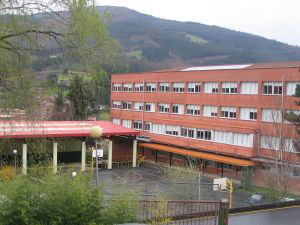

| Batxillerato - IES Balmaseda | Desarrollo de aplicaciones Web - CF Somorrostro |
|---|---|
| IKT | Lenguaje de Marcas |
| Teknologia eta ingenieritza | Entornos de Desarrollo |
| Elektronika | Programación |
| Historia de España | Bases de Datos |
| Historia de la filosfia | IPE |
| Ingles | Ingles tecnico |
El IES Balmaseda es un instituto público de educación secundaria ubicado en Balmaseda, Vizcaya. Ofrece formación en Educación Secundaria Obligatoria (ESO), Bachillerato y ciclos formativos de Formación Profesional en áreas como administración y gestión, electricidad y electrónica, entre otras. Se caracteriza por su enfoque en proporcionar una educación integral, combinando el desarrollo académico con la formación en valores. El instituto fomenta la participación activa de los estudiantes en proyectos educativos y culturales, así como en actividades deportivas y de sostenibilidad. Además, el IES Balmaseda trabaja para mantener una conexión con su entorno, colaborando con empresas y organizaciones locales para preparar a los alumnos para el mundo laboral o estudios superiores. Es una institución comprometida con la igualdad, la innovación y el desarrollo de competencias clave en su alumnado.

El Centro de Formación Somorrostro es una institución educativa ubicada en Muskiz, Vizcaya, con una trayectoria de más de 75 años. Es reconocida por su enfoque en la formación profesional, ofreciendo ciclos de grado medio y superior en áreas como informática, industria, electricidad, energía, administración, y más.
El centro destaca por su compromiso con la innovación educativa, integrando tecnologías avanzadas y metodologías prácticas en sus programas. Además, colabora estrechamente con empresas locales e internacionales para facilitar la inserción laboral de sus estudiantes. También ofrece formación continua y programas de reciclaje profesional para trabajadores y desempleados.
CF Somorrostro es un referente en el ámbito educativo de la región, combinando excelencia académica con valores como la sostenibilidad, el respeto y la inclusión.